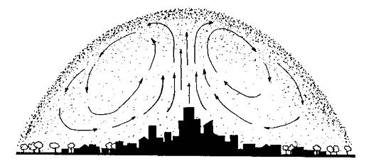
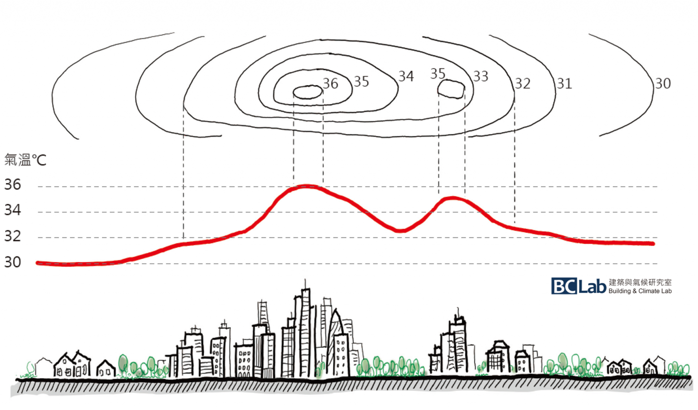
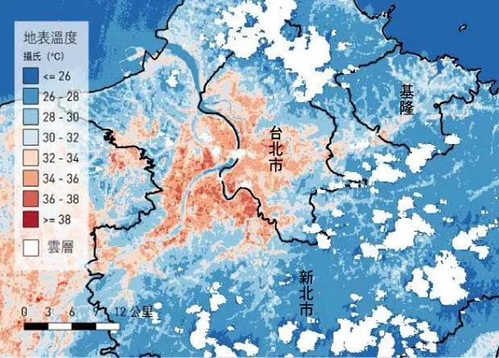
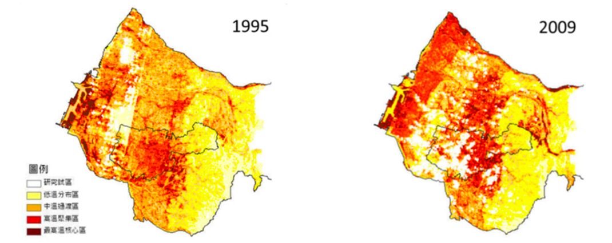

Resilient Cities Topics
Table of Contents
1 都市熱島
熱島現象的發現，是由於人造衛星的出現，使人類得以利用人造衛星從高空以紅外線拍攝地球。這種拍攝的最初目的，是作氣象觀測用途，用以分析雨雲的構成。可是，後來人類從紅外線影像中發現城市與週邊地區的溫度有著很明顯的差異，看起來城市就好像在周邊地區中間的一個浮島1。
而「都市熱島（urban heat island）」一詞，最早見於1958年Gordon Manley在英國皇家氣象學會學報，指的是一個自1960年代開始，在世界各地大城市所發現的一個地區性氣候現象2。簡單的說，由於都市區域擁有較 多的建築、工廠、道路 ( 柏油馬路 ) 等，且分布集中，導致它的平均溫度比 周圍的郊區還要高，所以形成了像是發熱的島嶼一樣的現象3。因為都市的氣溫有高低起伏的變化，若畫出等溫度線圖，看來就很像島嶼的等高線圖。在這個虛擬的島上，高溫區像島上的山峰，而且往往不只一座；而低溫區如島上的平原，也可能是兩個山峰之間的山谷（如圖1）。

Figure 1: 熱島效應: 都市氣溫的分布圖及剖面圖(資料來源:商周出版 )
過去五十年以來，台灣經濟快速發展，由於高度工業化，人口密集且集中於都市，使得像 是台北、台中及高雄等地逐步都市化，大部分土地由早期的農田或荒地已被 建築、工廠及柏油路所取代，其結果使得熱島效應越來越明顯，範圍也越來越大。
「都市熱島」效應的發生，意謂著在大型都市核心地帶升高的環境氣溫，通常在晴朗、無風的夜晚會達到高點，往往會比周邊地區還高上攝氏三至十度。而2010年美國一項重要調查顯示，美國東北部主要城市(波士頓、紐約、費城和華盛頓特區)的夏季溫度在三年內較之周圍鄉村地區更是高出了攝氏七到九度4。
最近一項發表在《Nature Climate Change》雜誌的研究指出，都市熱島效應將加劇全球暖化的危害程度。假使人類排放溫室氣體的趨勢不變，到了本世紀末（2100年），人口數量位居前25%的大城市，恐怕會上升超過攝氏7度，而人口最多的前5%超級城市（megacity），升溫幅度更上看8度，其中5度可歸因於全球暖化，其他則是因都市熱島效應的火上加油，使大都會將成為氣候災變的最大受害者5。此研究涵蓋1950～2015年位於各國的1692個都市，得出僅佔地表面積1％的城市，如今已聚集全球過半人口，每年貢獻世界近八成生產總值，卻也消耗了八成的能源，並排放多達六成的溫室氣體。一旦氣溫飆升到這麼高，不僅危害居民健康，也容易導致水資源短缺及乾旱危機，連經濟也會受影響，受創最重的某些城市，GDP恐因高溫而銳減超過一成5。
1.1 熱島效應的成因
造成熱島效應的原因其實很多，植物葉片進行蒸發的過程得以使地表及近地面大氣冷卻降溫，但當森林被大量砍伐或綠地被取而代之成為建築物、柏油道路、水泥等不透水鋪面覆蓋，降溫的效果也就大幅地降低。且由於經濟發展，過量使用汽機車與空調造成空氣與熱污染。而建築物林立的都市也降低了通風效率，同時熱對流旺盛，降雨反而集中於都市而非水庫集水區。且熱源被侷限於都市內，使得熱島效應更為嚴重，也影響區域氣候型態3。
由此看來，熱島效應主要還是因為人類對都市生活的需求，造成都市早期的發展型態多為符合居民生活與工作的便捷性為主，因此都市內大量使用電力或石化燃料的人工熱源，密集的建築物亦採用蓄熱量高與吸熱表面積大的材料，這些人為的設計使得都市地區溫度上升。加諸過往都市規劃中`並未適度地保留綠地，使得原本可藉由植物葉面的蒸發過程，讓地表及近地面大氣得以冷卻降溫的機制，卻因林木被砍伐或綠地被開發轉為建造建築物或道路後，其冷卻降溫的效果大幅降低，進而促使都市區域溫度上升而高於鄰近郊區6。
當愈來愈多鋼筋混凝土搭建的摩天大樓，取代傳統的天然材質（如木材）房舍，用瀝青柏油打造的馬路成為都市紋理，加上家家戶戶開不停的空調，還有車水馬龍產生的交通廢氣，上述種種構成現代都市的建設象徵和科技配備，不是容易吸收太陽溫度，就是大量製造溫室氣體或排放熱氣，一步步剝奪掉都市的氣候調節與降溫能力，變成矗立在地表上的一個個大火爐，升溫幅度甚至超越全球暖化的正常軌跡5。
綜上所述，產生都市熱島效應可歸納為以下四點7：
- 市區有大量建築物，郊區則無或較少。都市中大量混凝土、磚石構造、柏油路面這些建材將會吸收熱量，形成熱島，到了夜晚則逐漸放熱。
- 下雨後因都市排水良好，都市地區無積水，消耗在水蒸發所需熱量自然減少，故都市中熱量不會因此而減少。
- 都市有大量空氣污染物質，容易形成煙霧與霾，夜間會減少地面輻射熱排放，使地面降溫效果減低。
- 都市居民大量製造空氣污染物質，如排放二氧化碳、煤炭、使用冷氣排出廢熱。
1.2 熱島強度
熱島效應之強弱可採一個定量指標來評估，稱之為「都市熱島強度」，其定義為在同一時間下市中心最高溫度與市郊最低溫度之差8, 9。

Figure 2: 熱島強度
在圖2中，市中心是典型的高溫區，郊區則為低溫區，都市中公園綠地的氣溫也會略低一些。圖中最高溫（36℃）與最低溫（30℃）的溫差為6℃，即為都市熱島強度。
都市熱島強度的定義看來很單純，但實際的估算需同時考慮眾多因素。首先是都市中最高溫及最低溫的地點及數值，並不像山川、平原地形一樣，位於固定位置，有固定的高度，它會隨著不同年度、季節、時段一直在改變。以台南為例，白天最高溫常出現在東南側的內陸區，而夜間最高溫卻是位於西北側的沿海區。另外，都市最高溫區很容易指認，通常是在車站、市中心，或發展密集的區域，但低溫位置卻很難定義。低溫區應該選擇在都市開發密度高低變化的邊界處，且海拔高度應該與高溫區接近較為合理，若台北市的低溫區選擇海拔高、氣溫低的陽明山便有失客觀9。
1.3 台灣熱島空間分布
一個城市的都市熱島現象，會與它的自然環境特徵及地理區位， 和人為開發下都市型態、建築開發、地表材料、人工發熱有密切的關係。雙北市是盆地地形加劇都市熱島的典型範例。被雪山山脈及大屯火山群環繞的盆地，如同一個碗一般，太陽輻射熱及人工發熱都蓄積在盆地裡，涼爽氣流不易進入，熱氣也不容易散出去，造成又熱又溼的狀況10。國家實驗研究院蒐集過去近百年(1909～2008年)氣溫資料，發現期間全台氣溫上升攝氏0.8度，都會區卻上升達1.4度，升幅幾乎是全台平均值兩倍5。
劉說安、沙學均3將地球觀測衛星 MODIS 熱波段感測計算所得之地表溫度以地理資訊系統 (GIS) 套裝軟體進行疊合，取得熱島效應之空間分布狀況，結果發現台北、台中及高雄皆有明顯的熱島中心，郊區的溫度則相對較低。
Figure 3: 台灣三大都會熱島空間分佈
由圖3可看出，台中地區出現兩個熱島中心位置，一位於台中市區，二則位於豐原市區，由於豐原市為台中縣之商業中心，因此在建築物漸多密集的開發下，豐原市亦成為另一個熱點位置。另外，台北地區於夜間時段較有明顯的熱島中心，白天則平均分散於整個市區，但主要還是分布於中正區、中山區、松山區、大安區及大同區等。高雄地區則沒有明顯集中的熱島中心位置，但主要還是分布於高雄市區，於白天時段，由於高雄屬於海岸型都市，熱島中心偏向內陸之苓雅區、鳳山市等區，而夜間時段由於都市蓄熱量高而散熱速率低，熱島中心則位於新興區、前鎮區、鹽埕區附近，此皆位於高雄市之商業鬧區3。
根據劉說安、沙學均3的進一步研究，台灣平均都市熱島強度以夜間較具有規則性，台北、台中、高雄地區的都市熱島強度皆以春冬季大於夏季，推測不同季節的植生覆蓋產生變化可能是主要原因之一。由於夏季為植物的生長季節，植生覆蓋量大於冬季，因此可提供水分蒸發散來降低熱島效應的效果亦比冬季大。
- 大台北地區
雙北市雖因盆地地形容易蓄熱，周遭的自然條件仍有調節氣溫的機會。舉例來說，盆地西北向及東北向的淡水河及基隆河，都有助於北投、南港、內湖溫度的降低，然而，流經盆地中央的大漢溪、新店溪、淡水河上游的兩側河岸，仍然高溫難降。由此可見，河谷引入的涼爽氣流確實對盆地周邊的蓄熱有減緩效果，但是在盆地中央的降溫效果卻不大11。
以2016年7月29日大台北地區的NASA Landsat 8衛星遙測資料為例，當天中央氣象局台北氣象站上午10點測得氣溫為攝氏35度，中午12點更測到攝氏37.9度，天氣炎熱無雨。圖4顯示大台北都會區的地表溫度，普遍落在32度以上（紅色區域），較基隆市、宜蘭縣（藍色區域）高出4度以上12。

Figure 4: 大台北地區的地表溫度圖(2016, 資料來源:NASA)
由圖4來看，台北市的地表溫度雖大致上高於隣近城市，但普遍溫度仍在34～36度之間，相對於溫度更高的新北市，並非熱島效應最劇烈的地方。地表溫度最高的地區，主要落在三重、新莊、永和、板橋等新北市行政區。這些地區之所以地表溫度高，與人口稠密度高，綠化景觀不足，以及鐵皮工廠、頂樓加蓋等易吸熱的建築物過度密集息息相關12。
- 三重
- 新莊
新莊新樹路一帶工廠林立，滿佈鐵皮工廠，加上綠化景觀不足，導致這塊長2公里、寬1公里的地區，地表溫度飆破36度，部分地區更達到38度以上。
Figure 6: 新莊地區溫度圖(資料來源:NASA、內政部國土利用調查)
- 永和
與三重和新莊不同，永和不是工業發達的地區，但人口稠密度全台第一高，人工建物密度高，加上舊式公寓多在屋頂加蓋鐵皮，是熱島效應的最佳環境。新北地區工廠、公寓常用鐵皮屋頂來隔熱或反射陽光，以致於建物上方容易蓄熱（類似太陽能板），所以呈現紅色。
圖6顯示，永和區全區的地表溫度，大多在36度以上，只有綠化景觀較多的公園、小學，才能降到32度。

Figure 7: 永和地區溫度圖(資料來源:NASA、內政部國土利用調查)
- 萬華
雖然台北市地表溫度普遍低於新北市人口稠密區，不過萬華區是個例外。華江高中以南、青年公園以西的南萬華地區，地表溫度在36度以上，南端的台北魚市，地表溫度更高到38度以上。
Figure 8: 萬華地區溫度圖(資料來源:NASA、內政部國土利用調查)
- 三重
- 台中地區
根據中央氣象局資料顯示台中氣象站在過去 100 年的平均溫度上升 1.11°C，比聯合國氣候變遷 小組(IPCC)所估計全球百年來溫度上升 0.6°C還高出 1 倍;而台中地區隨著時代演進，都市人口增加、土地開發需求增長、交通發達及政策變革，使人為開發逐漸由舊台中市向外擴展，也使得熱島效應在台中地區亦有逐漸增加之趨勢13。

Figure 9: 台中1995、2009年熱島強度分級分佈圖
圖9為1995及2009兩年度之熱島強度分級分布圖，兩個時期皆顯示台中直轄市熱島強度之最高溫核心區主要集中於靠海的梧棲區，其次為東區、西區、南區、北區及中區，其面積百分比亦從 1995 年的 8%增加至 2009 年的 10.25%。
由於台中市最早開墾地區於日治時期，以台中車站為中心向外擴展; 隨時代演進，都市人口增加、土地利用需求增長、 交通發達及政策變革，使人為開發逐漸向外擴展， 台中市逐漸由單一發展核心擴展為多核心都市;另 靠海的梧棲區於 1973 年開始動工進行台中港的興建，包含商港、工業港及漁港三部分，另為配合台 中港與臨海工業區興建開發，於港區西南角設置火力發電廠，以供應中部區域都市及工業所需電力。 台中港的興建迅速帶動中心都市空間向西北方發展 ，並帶動海岸線的城鎮如:清水、梧棲等地發展13。
由台中直轄市於 2009 年熱島強度成果圖中(圖9)可發現，熱島溫度值明顯偏高，最高溫核心除了分布於東區、西區、南區、北區及中區外，高溫聚集區還包括了梧棲區、大甲區，緊鄰舊台中市建成區之潭子區、及大里區，從面積百分比來看，台中地區之高溫聚集區從前期之 16.7%至後期增 加為 26.91%。由此可看出，台中市在後期之熱島 效應主要為兩部分，分別為西北沿海地帶，包括大 甲區、大安區、清水區、及梧棲區;以及台中直轄 市中心地帶，包括豐原區、潭子區、北區、中區、 西區、南區、中區、及大里區;兩者皆為帶狀分布13。
Figure 10: 台中市1995,、2008年國土地用調查資料使用類別分布圖
何佳薇、周天穎、楊龍士13進一步以 1995 年及 2008 年前後兩期之國土利用調查資料中擷取面積資料，進行面積比例分析及分析土地利用類別之空間分佈情形，探討不同土地利用型態於熱島強度上之反應成果。從圖11中可以看出，台中直轄市在十三年間面積比例變化最為顯著之使用類別為水利用地，減少了 7.83%;其次為農業用地，面積比例減少 7.04%，減少的部分僅有 上述兩類;在面積比例增加部分，變化最大為建築用地，增加面積比例為 3.58%;其次為工業用地， 增加了 2.78%;接著為森林用地，增加了 2.72%。
透過 1995 年和 2008 年間的土地覆蓋面積比例 變化橫條圖，可以更進一步說明，在水利用地和農業用地減少的 14.87%中，大部分來源於增加的建築用地(3.58%)、工業用地(2.78%)、森林用地 (2.72%)、交通用地(2.42%)與其他用地(2.31%)。
另減少的部分以水利用地最為明顯，比例減少 7.83%，從分布圖(圖10)中可明顯看出河道縮減之變化;而由於開發密集，農業用地亦逐漸減少，至 2008 年比例上已減少 7.04%，受到都市 化的影響，建築物及交通道路所需空間不斷增加， 綠地覆蓋面積逐漸減少，為造成都市熱島效應主要成因之一13。
Figure 11: 台中地區土地覆蓋面積比例變化橫條圖
綜上所述，台中市最高溫核心區與高溫聚集區主要分布在台中直轄市中心地帶，熱島效應影響較大之區域主要分布在土地利用類別為人為建造之不透水層鋪面上；主要土地利用類別為人工鋪面及其他用地;溫度值較低之中溫過渡區與低溫分布區大多集中分布於以高溫區為中心向外擴 張之濱海地區，以及整個台中市中部與東部地區;土地利用類別主要為植生，為熱島效應貢獻度為負相關之因子，對熱島效應影響較小。在台中未來之都市使用規劃，應加入綠地規劃，考量人工鋪面與都市生態平衡，避免人工鋪面破壞都市生態，減少人工吸熱體造成都市溫度升高，以緩和都市熱島現象之發生13。
- 高雄市
由於熱島效應，國家災防中心點名，未來20到40年內，台北市平均每5年就有一天高溫超過40度，到了21世紀末更嚴重，台北市1年高達9天破40度，台中市有1天，高雄也有5天，屆時一年365天就有100天高溫維持36度14。事實上，高雄市一年有165天氣溫高於攝氏30度，2020年台灣的民眾應該體驗到夏季時的極端高溫，6月29日台北出現38.9°C高溫，打破台北6月最高紀錄，而在高雄、台南，及台中，因受到海洋調節，過去白天內陸的高溫在夜間時尚能有效降溫。但近期位於內陸的台南市仁德、永康，高雄三民、鳳山、仁武，台中大里，在夜間溫度仍居高不下，導致隔天清晨的起始溫度逐步上升15。
2021年台灣經歷了半世紀來最嚴重的乾旱，5月11日在長期無雨且受太平洋高壓偏強影響下，南部山區在中午就出現極高的氣溫，如台南市北寮高達39.3°C、高雄市月眉也達38.4°C。這顯示在地型特徵與氣候變遷趨勢下，持續加劇的都市熱島現象可能造成中南部都市近山區的氣溫逐漸攀升15。2021年5月13日下午興達電廠因故跳電，全台數百萬戶分區限電，根據中央氣象局資料顯示，當天南部多個氣象測站破38度高溫，其中高雄市內門更達到39.6度，逼近40度16
以2001年的記錄為例，依熱島效應的理論而言，溫度最高地區應出現在市中心，然而圖12所呈現出的型態似乎不是如此，推測其原因為林園之高溫主要是林園工業區中大多為石化業且 24 小時皆不停工所致17。
Figure 12: 2001年6月1-2 日13時之等溫線與風速風向分布圖
到了傍晚時分，情況稍有改變(圖13)，氣溫極大值除了林園站以外，另一位於市 中心的高溫區出現在高師和平站。此處的確是市中心相對較繁華、人口較聚集處，而 且修正前後溫度改變不大17。
Figure 13: 2001年6月1-2 日17時之等溫線與風速風向分布圖
進一步分析大高雄地區氣溫差異情形及其日變化演變過程，由圖14可知， 城鄉之間的確存在明顯的溫差，尤其以 20 時之後，24 時之前溫差最大，此現象也與「都市熱島效應在傍晚至午夜最強」的論述吻合。此外，高雄為台灣海陸風最明顯的城市，而 13 時即 一天之中海風最強的時刻。白天海風(向岸風)強盛， 且有漸向內陸遞減之趨勢；到了晚上則風向轉為離岸風，且風速較弱，所以靠海地區氣溫最低，而下午高溫中心偏向內陸，這也是鳳山成為高溫中心的原因。
Figure 14: 高師和平測站與燕巢測站之個案溫差時間序列圖 (2001年6月1-2日之平均合成溫度)
- 小結
台灣目前有 67%以上的人口居住於都會區中，隨著經濟的繁榮與科技的進步， 必定會有越來越多的人口聚居在都市中，高度的都市化與人口稠密狀況將會使都市環 境發生改變，例如:都市內偏高的溫度使能源使用量增加，造成高能源的消耗;對於 這些改變我們必須進行了解與反應，進而使我們的生活環境得以永續利用17。
1.4 熱島效應帶來的影響
毫無疑問，都市熱島效應對都市生態而言是一種不利的影響，其影響包含有：(1)高溫化、(2)乾燥化、(3)日射量減少、(4)雲量增多、(5)霧日增多、(6)降雨量微增、(7)平均風速降低、(8)空氣污染等現象8。尤其都市熱島效應常使得都市中污染物隨著都市大量人工發熱上昇後，遇到冷空氣而往四周下降，然後在圓頂罩內循環不散的現象，形成所謂的塵罩現象(dust dome effect)，這使得都市上空常有一呈圓頂狀的灰煙氣團罩著，使都市中的日射量降低、居住環境衛生條件下降、空氣污染更加嚴重。
熱島效應所帶來的影響主要可從以下幾個層面來探：
- 城市能源的消耗
都市熱島造成的氣溫上升，會直接影響人們待在戶外的感受，也就是熱舒適性，這將影響人們對環境的滿意度及空間利用率，對都市生活品質十分重要。如果又依賴空調來減緩戶外高溫造成的室內悶熱，不僅會排放大量廢熱，使戶外再升溫，造成惡性循環，大幅增加的電費也會讓我們荷包失血。台灣的用電量仍有八成依賴火力發電，一度電會排放0.51公斤二氧化碳。因此當用電量增加時，二氧化碳的排放量也會升高，是導致全球暖化的關鍵因素之一9。
都市熱島造成都市內溫度的上升，氣溫愈高愈可能帶動空調冷房的使用需求進而增加能源的消耗，因此都市能源的使用型態也將隨之改變。根據林憲德教授的實測研究，台灣大都會區的都市熱島強度甚至高達3~4℃，再根據台電的統計，外氣溫每上升1℃，建築空調耗電量約上昇6﹪的資料來計算，夏季台北市中心的空調設備耗電量，比郊外高出約四分之一，都市溫暖化效應有如火上加油8。從台灣能源使用的角度來看，若以夏季氣溫攝氏 30 度為計算基準，氣溫每升高1度，就要增加約 60 萬瓩的耗電量，相當核能一廠一部主機的供電量。而熱島效應往往又會與能源的使用形成惡性循環。即熱島效應提高了都市氣溫，造成冷氣使用量增大，而冷氣排放的廢熱又再次提高都市氣溫，導致冷氣使用量又再增加。如此惡性循環將耗費更多的能源18。
值得一提的是，單就能源的角度來看，溫寒帶與熱帶情況不同。熱島效應在冬夏皆 冷的地區反而可以減少暖氣等能源的使用量。冬冷夏熱地區的情況比較複雜，但一般降 低溫度（開冷氣）比增高溫度（開暖氣）來的耗電。以台灣的情況而言，冬季因熱島效應節省的暖氣能源遠小於夏季開冷氣所耗費的能源。台灣的用電量仍有八成依賴火力發電，一度電會排放0.51公斤二氧化碳。因此當用電量增加時，二氧化碳的排放量也會升高，是導致全球暖化的關鍵因素之一9。因此熱島效應仍在凈效應上導致能源的損耗，即熱島效應對台灣的能源使用依然扮演著明顯的負面角色18。
- 都市氣候的改變
- 日照時數減少
台灣地區每年完整的日照時數從 30 年前的 2000 個小時降低至目前的 1700 小時。在太陽常數與雲量統計資料沒有太大變化的情形下，導致日照時數減少的原因主要就是懸浮微粒的增加。中央氣象局的研究報告就曾經指出，台灣空氣品質的惡化與懸浮微粒的增加是導致日照時數減少的主要原因19。而伴隨熱島效應之都市地區風速下降使得懸浮微粒更不易擴散，進而直接造成太陽入射輻射量減少。台灣的車輛密度與單位空氣汙染量均名列世界前茅，這也造成台灣地區 30 年來日照時數減少了約10-15%。日照減少即是太陽入射能量減少，將對生產力造成影響。如植物生產力下降， 進而衝擊整個食物鏈的生態。對於未來開發太陽能也是負面的作用18。
- 相對濕度減少
根據中央氣象局的觀測資料顯示，這幾年夜晚相對濕度達到 90％的時數只有 40 年多前一半。而台北市近幾年相對濕度超過 85%的日數也只有 30 年前的三分之一。這個變化從台北市近 10 年來幾乎已經看不到霧的現象可以明顯感受到。現在台北市熱鬧的東區在過去是整片的稻田，現在幾乎已經完全被水泥道路與建築覆蓋，地表的垂直水汽通量遠小於過去。而霧氣或水汽的減少對於脆弱性較高微生物生態甚至農產品產量都會造成影響。尤其以冬天為旱季的台灣南部，影響程度會比北部來的更大。在一些半乾燥或乾燥氣候區霧氣是動植物生存的重要條件，而熱島效應造成的高溫化與乾燥化將導致生態環境的破壞。在某些環境敏感度高的地區，生態平衡往往是牽一髮而動全身，影響的層面可能是難以回復的。台灣的氣候較為潮濕，且都會區的產業活動多以工商業為主，相對濕度變化對人類日常生活的影響比較不明顯，但對於微生物生態及植物生產力的影響值得進一步研究。
- 降水型態改變，都市水患機率增加
通常水庫位置的選取會考慮當地的氣候狀況及地形條件，例如在盛行風的迎風面上或地形有利的位置。但都市的出現或規模的改變會影響經過其上方氣流的動力與熱力結構，使得降水位置由原先的集水區偏向都市及都市的下風地區，因此導致集水區降水減少。舉例來說，當氣流吹向陸地時，熱空氣遇到山區會向高空上昇，降水就容易聚集在集水區。但是都市熱島效應使得氣流在經過都市上方時就提前上升，造成都市地區及其下風處容易降水，集水區的雨量反而減少。而都市的降水又因為高度水泥化使得雨水不易下滲，因此降水往往形成地表逕流或積水釀災。總體來說，即使在總雨量沒有減少的條件下，降雨分布的改變就已使可利用水資源量減少，都市水患機率增加18。
以台灣西部沿海為例，原本海風帶來的豐沛水氣會降雨在山區，然而，市中心的高溫及乾燥造成的大氣不穩定，會強化都市下風處的對流，可能使市區降雨量減少，或在都市下風處增加雨量。這顯示都市熱島會改變區域的大氣條件，造成降雨量及降雨位置的不確定性，此結果隱含了熱島效應對水資源分布的重要影響。另外，熱島效應也使得午後落雷機會增加，對於都會區的交通設施及戶外活動也是重大的威脅9。
- 日照時數減少
- 影響居民健康
在空氣品質方面，都市熱島若發生在日射強烈的時段，常會伴隨著臭氧的發生機率及濃度提高的現象。而密集街區的風速較低，若都市的交通量及空調使用量增加，汙染物卻不容易擴散，就會招致空汙濃度增加6。此外，沿海都市的高溫也會造成局部環流結構的改變，如白天海風增強，使得汙染物由都會區輸送至內陸山區，並累積於山區；夜間陸風減弱，則會造成汙染物的局部累積加劇9。
此外，都市化使得設置於都市的空氣品質監測站附近的微氣象條件改變，進而影響空氣污染監測或造成錯誤解讀。都市地區由於風速較弱，污染物不易擴散至高度較高的儀器採樣口，因而使得監測到的懸浮微粒濃度下降。在總懸浮微粒 (TSP) 排放量沒有減少的情形下，測站卻有可能觀測到空氣品質改善的現象，原因就是而風速的減弱。再加上氣溫的上升也將使得氮氧化合物與碳氫化合物等臭氧前趨汙染物在離開汽機車等排放源後有更充裕的時間進行光化反應，導致臭氧汙染濃度更為增加。許多空氣污染與呼吸道健康的相關研究都指出，都市地區的懸浮微粒濃度與各年齡層嚴重呼吸道疾病急診具有顯著的相關20。
都市熱島效應雖可舒緩冬天的酷寒，卻同時也在炎熱的夏季帶來致命的後果，醫學研究顯示，「因多重疾病導致的住院風險明顯增加，包括都市熱浪引起的心血管疾病、缺血型心臟病、缺血型腦中風、呼吸疾病、肺炎、脫水、中暑、糖尿病，以及急性腎衰竭。」事實上，美國環保署(the US Environmental Protection Agnecy)估計，在1979至2003年間，熱暴曬在美國引起的過早死亡，比颶風、閃電、龍捲風、洪水和地震等其他自然災害加總的致死人數還多4。
1.5 各界各國面對熱島效應的策略與措施
為了回應日益嚴重的熱島現象，世界各大城市也發展了各自的因應措施，以下即臚列幾個具代表性的城市為例：
- 紐約
做為全美158個都會區當中都市熱島效應最嚴重的前三名之一，紐約市的溫度比周圍的自然區域高達12°C。此外，沒有空調的公寓和家庭可能比外面的溫度高11°C。這就是為什麽在紐約市，每年有超過1100人因過熱而住院，超過100人死亡。
2017年，紐約市推出了 “清涼社區 “計劃，這是其首個對抗極端高溫的計劃，並撥款1億美元用於在高風險社區的綠色基礎設施和植樹方面的投資。此外，紐約市還發起了 “做個好朋友 “活動，旨在為最難接觸到的紐約人提供幫助。此外，紐約市正在將市屬財產的屋頂刷成白色，以便將更多的熱量反射回大氣中、並改善公共場所的空調，使的更多人可以進入避暑，市府甚至為低收入、易受高溫影響的居民購買了空調。迄今為止，該市已在居民家中安裝了74,000台空調，還創建了一個公用事業援助計劃，在溫暖的月份提供每月30美元的補貼21。
- 芝加哥
1995年，芝加哥遭遇了一場致命的熱浪，從7月12日至16日五天之間，溫度飆高至華氏106度，相當於攝氏41度的高溫， 造成485人喪命，據公共衛生部門的統計，在熱浪襲擊後，更有739人在短期內相繼死亡，逾千人因高溫引發之症狀而 住院;而1999年爆發的熱浪 又再奪走了103條人命;因為 暑氣逼人，高樓空調的用電 高峰也癱瘓了電力系統，讓 16萬人飽受停電之苦，這些 嚴重的後果也促使芝加哥當 局認真思考解決之道22。
當時的市長達利(Richard M. Daley)曾在1994與1997年兩度造訪姊妹市德國漢堡，獲知德國大量運用綠屋頂來減緩都會區熱島效應及暴雨逕流 (Stormwater Runoff)的威脅，還可以涵育水源，達到城市降溫與減少能耗的效果，旋即研議發展綠屋頂技術來做為永續城市營造的其中一環，並率先於2000年在市府大樓屋頂植栽綠色花園，迄今已養護超過150種共20,000株植栽22。
芝加哥政府並與美國環境 保護署(U.S. EPA)和柏克萊 國家實驗室共同評估屋頂花園的效益，在市府大樓綠屋 頂測得之表面溫度比一般屋頂可降溫50~78華氏度，平均每一英吋降雨可涵水量達 75%，每年減少能源及水源消耗支出達5,000美元(約新臺幣15萬元)更吸引鳥類和昆蟲築巢，並採收蜂蜜捐做慈善之用。
在綠屋頂之外，達利市長進一步推動綠巷道 (Green Alley)建設，採用透 水鋪面、雨水引流並連結城 市下水道來管理降雨、補給地下水並減輕水患問題，鋪面採用淺色高反射率設計，並運用廢橡膠、礦渣、再生混凝土等回收廢材，兼具環保、過濾與降溫等功能;政 府亦出版芝加哥綠巷道手冊(The Chicago Green Alley Handbook)提供大眾簡單易懂的行動指南22。
- 加州
加州最早於2001年為了應對電力短缺，在建築物能源管理規範中加入「冷卻屋頂」作為提升能源效率選項。2005年之後，這些冷卻屋頂條款成為面積超過180平方公尺或大規範整修的非住宅建築維修及翻新屋頂工程的強制性要求，使其在貢獻節能成效之外，也對減緩熱島效應有所助益23。
在「涼鋪面」上，加州交通部(Caltrans)制定「涼鋪面手冊」，對涼鋪面的設置提出標準規範，2015年建築標準委員會研議將手冊的規範納入「加州綠色建築標準規範」之中。此項加州綠色建築標準代碼(California Green Building Standards Code, CALGreen)於2011年1月1日生效，該規範涵蓋了住宅和商業建築，提供了52個非住宅強制性措施和130個可供選擇的規定，與緩解熱島效應相關的自願措施，如遮蔭、涼鋪面和冷卻屋頂等技術含括在內23。
在城市綠化上，除了2011年公部門提出了高額的經費加以推動外，此項以「增加樹木和植物覆蓋率」為主的措施亦廣泛地被使用在「針對公衛的氣候行動(Climate Action for Health)」、「加州氣候變遷調適規劃指南(California Adaptation Planning Guide)」及「加州城市和社區綠化(California Urban and Community Forestry)」等計畫中，期能逐漸增加城市內的綠地、綠屋頂等，以長期的持續作為減少氣候變化帶來的城市熱島效應23。
另外，在預防性管理作為上，加州公共衛生部門為評量高溫與熱浪等極端熱事件對個體社區的危害，設定相關風險指標包含：老年人口比例高、社會孤立人口、兒童、戶外工作者、窮人、慢性病和醫療服務不足等，並透過這些指標進行普查以衡量熱事件脆弱性指數值，進而繪製極端熱事件之風險潛勢地圖(Public Health Vulnerability to Climate Change and Mapping Risk)，用以識別需關注的熱點區域及其個體社區23。
- 哥本哈根
同樣以打造屋頂花園為手段，丹麥哥本哈根，則是祭出鐵腕，將綠屋頂的設計訂為強制性法規。為了實踐2025年預期達成之目標，成為世界第一個碳中性城市 (Carbon Neutral City)，哥本哈根於2010年5月頒布綠屋頂政策，強制規定所有屋頂斜角小於30度的建築物，都要裝設綠屋頂，並規定綠屋頂的規格必須要能夠:
- 吸收 50~80%的降雨
- 反射陽光熱能，達到隔離及降溫效果
- 綠化城市，降低城市熱島效應
- 增添建築美 感，提升生活品質
- 抵禦紫外線，延長屋頂防水層使用年限
目前在哥本哈根有20萬平方公尺的平面屋頂，其中30座大樓建築均已覆蓋綠屋頂，預期能以每年 5,000平方公尺的速度達成屋頂綠化的目標22。
- 吸收 50~80%的降雨
- 日本
日本早在2002年即辦理跨部會會議處理都市熱島效應，透過跨部會協調合作，全方位的考量如何因應處理。2004年提出的「減緩都市熱島效應政策框架」中，提出四大類因應對策，分別為：減少人為熱輻射、改善城市地面、改善城市結構，以及改善生活方式。以東京都為例，統整了都市設計、住宅、下水道、環境、產業勞動、建設等各區處，分別就「綠化增加」「熱排出、冷卻」等不同減緩策略類型，依其管轄範圍提出相關執行計畫2。
另外，日本國立研究開發法人建築研究所（Building Research Institute, BRI）則針對建築物密集的區域創建「風道」（wind path）的效果進行模擬評估，以東京中部地區在港口區域建造摩天大樓的案例進行檢視。發現大樓興建擋住來自海上的涼風，且影響都市內風的對流，恐加劇都市熱島效應，因此提出了三大措施，包括2：
- 評量摩天大樓之間的狹縫通道，藉以改善弱風帶，
- 拆除部份建築物既有的牆形建築物，
- 善用河面上的高架公路來打造「風道」，期透過空間規劃措施來改善都市環境，創造更適宜的都市空間分布型態以減少熱島效應的形成。
此外，在公部門的作為上，日本政府如前所述確有將減緩熱島效應付諸行動，依日本環境省所公布的「熱島對策指引」之內容，在因應作為上分為六大類20項技術，此六大類包含2：
- 風的應用對策，如引入海風、山谷風以及從河川來的風；
- 綠化的應用對策，如公園、綠地、街道樹、停車場、建築工地、屋頂及牆壁等各種綠化方案；3）水的應用對策，如噴水、水景設施、路面灑水、建築物建材、排水設備等；
- 日照反射與遮蔽的應用，如涼鋪面、冷卻屋頂、人造遮蔭等；
- 人為減緩排熱效應：區域性冷暖房系統的應用、減少建築物與汽車的排熱；
- 宣導教育，如預防熱中暑等預防性宣導。在此指引中亦對各技術內容的原理、預期效果、相關應用及關聯性制度提出詳盡的說明與介紹，讓使用者可快速掌握技術的內涵。
另外，針對社區的部份，日本環境省於2016年公布「社區熱對策指南」，其內容除防熱、防中暑等措施推廣，亦對專業人員如何採取相關措施以緩解熱島效應，提供了具體對策與技術資訊。整體而言，就日本因應熱島效應的作法來看，對城市空間的規劃、街區與建築的設計等，日本各界都提出相關改善方案與建議，並以公部門的力量持續落實推動2。
- 評量摩天大樓之間的狹縫通道，藉以改善弱風帶，
- 日本東京都
東京對於緩解都市熱島的策略主要可自都市、社區以及人工排熱三部份來說明7:
- 都市層面的對策
- 強化監測系統: 強化都市微氣候之觀測網路，增加整體觀測網路之密度以及建築群谷間微氣候效應的掌握，以強化執行對策的實施。
- 擴大都市冷卻場所: 擴大對於都市冷卻有助益之綠地、水道及農地等自然環境的保育。都市計畫中強化步道加寬，步道周邊的建築外牆綠化及透水性道路的鋪設等方向積極推動。
- 散風路線的設計: 對於都市計畫中的建築物配置，整體考量地形及風向的變化，強化都市街區的散風功能。
- 強化監測系統: 強化都市微氣候之觀測網路，增加整體觀測網路之密度以及建築群谷間微氣候效應的掌握，以強化執行對策的實施。
- 街區、建築物之被覆
- 建築基地的被覆對策: 獎勵推廣建築基地及停車場基地的綠化、透水性鋪面鋪設以及綠地的保養維護。針對東京都自然保護條例中之「建築物環境計畫中」推廣相關之技術情報，優良事例介紹以推廣相關的建物綠化對策。
- 公共道路的被覆對策: 道路柏油及混凝土鋪設改善，推廣透水性的道路鋪裝技術，推動下水道回收水使用於道路綠化澆灌及清洗等方向的檢討。
- 建築物的被覆對策(屋頂綠化): 推動建物屋頂及壁面之綠化工程及推廣高反射性塗料技術的研究以抑制建物的蓄熱性。
- 建築基地的被覆對策: 獎勵推廣建築基地及停車場基地的綠化、透水性鋪面鋪設以及綠地的保養維護。針對東京都自然保護條例中之「建築物環境計畫中」推廣相關之技術情報，優良事例介紹以推廣相關的建物綠化對策。
- 人工排熱的抑制對策
- 推廣建築物節能對策
- 推廣建築物節能對策
- 都市層面的對策
1.6 都市熱島因應策略
綜合分析各城市對於都市熱島的因應作為，大致可分為「調適(adapting)」與「冷卻(cooling)」二大類策略，前者著重在擬定不同期程下的重點措施內容，以如何因應急迫性的危害為主。後者則含括可減緩都市熱島效應的科技手段及方案，改善居住環境的建築物與綠化效果等以降低熱島效應發生的可能性23。此兩項策略之間要如何互相搭配並掌握本身的規劃重點，其設計概念請參見圖15所示。
Figure 15: 調適與冷卻都市熱島策略規劃概念圖
- 「調適(adapting)」都市熱島
在「調適」都市熱島方面，由於都市內居民受到熱島效應影響，使得生活環境的溫度已較都市周圍郊區等非都市區域來得悶熱，若再受限個別的健康因素如年老或疾病，或是經濟條件不佳不願使用空調等，有可能因高溫造成健康的危害。因此，公部門有其必要對基礎設施、維生設備等硬體措施，以及都市居民健康管理、醫療體系等軟體措施，全面性地檢視這些軟硬體措施在面對高溫時的脆弱度，進而提高緊急應變的能力，以減少潛在的危害風險。因此，在適應作為上可分為23, 24：
- 短期作為：
公部門平時應建立熱點潛勢地圖並搭配預警通報系統，並篩選面對高溫時可能的高風險族群，提高對危害因子的認識，以及瞭解與熱相關疾病症狀該如何治療，此外，分區設置降溫避難中心，當熱浪發生時提供有需求的居民得以尋求庇護。再者，因高溫引起的能源與電力需求，也需要有帶動能源效率提升相關作法與電力調配的應變措施，避免電力供給不足造成的危害。另外，不同使用標的之用水量如民生用水、農業用水等，因高溫而增加時，是否有適宜的調度配置方法，確保必要的維生需求，以及道路、火車軌道是否需改用更具彈性的材料進行強化或修改，使其可承受高溫下的使用環境。
- 中長期作為：
將改善都市熱島效應視為長期性作為，如接續簡介之「冷卻都市熱島」等作法，期逐步改善都市居民的生活環境外，亦可分為平日與緊急二大策略方向，提升都市居民認識熱島效應帶來的衝擊與影響。因此，在平日而言，重點措施在於教育宣傳大眾如何掌握高溫、熱浪等極端氣候事件的預警通知，並瞭解天氣預報、警示系統及健康風險宣傳等所表示的意涵。緊急的時刻則是指在遭逢熱浪來襲的當下，強化位於都市熱點居民的自保意識，適時導引有庇護需求的居民至降溫避難中心，或是尋求相關支援協助。另外，對興建已久的道路、橋樑和鐵路，以及能源與資源使用配置等各項基礎設施、維生設備，若仍未完成因應高溫的強化調整時，在面對熱浪來襲的緊急狀況，應特別關注此類型潛在風險及其脆弱度，必要時應先啟動預防隔離機制，避免危害的發生。
- 短期作為：
- 「冷卻(cooling)」都市熱島
綜觀各國對減緩都市熱島效應的作法，在範圍與層次上可概分為以社區行動為主及以都市空間規劃為主二大類，羅良慧23參採美國環保署網站所建置的熱島社區行動資料庫(Heat Island Community Actions Database)，綜整歸納以社區行動為主的五大類都市熱島冷卻策略內容:
- 在社區層次可進行的「冷卻(cooling)」都市熱島策略：
- 增加樹木和植物覆蓋率：種植樹木和植物一直是調節微氣候的重要作法之一，逐漸成長的樹木和植物除了可形成遮蔭覆蓋外，亦可因蒸散作用提供降溫以降低空氣溫度和地表溫度。另外，藉由樹木和植物的生長也可以減少雨水逕流以防止地表土壤的侵蝕。
- 安裝綠色屋頂：即是以在屋頂上栽種植物(如植物、灌木、草或樹等)的作法，透過植物蒸散作用並提供遮蔭，去除生活環境中的熱量，有效地降低屋頂表面和周圍空氣的溫度外，並對雨水管理的改善也有其效用。
- 安裝反射性材質為主的冷卻屋頂：指在屋頂上搭建由反射性材料或塗料製成的遮蔽式建物，藉由反射陽光和建築物的熱量以降低屋頂溫度，提升居住者的舒適度並使建築物室內溫度下降進而降低冷房空調等能源使用需求。
- 使用涼鋪面：在人行道、停車場使用具反射性或可滲透性的鋪路材料，使其反射太陽能及增加水分蒸發，達成比傳統路面更涼爽的效果。選用適合的鋪路材料不僅可以冷卻路面和周圍的空氣，還可以減少雨水逕流並可提高夜間能見度。
- 實踐智慧成長：推動社區居民的共同參與，以維持發展且宜居的環境為目標，提出相關措施與行動使其在經濟發展之餘亦保護環境。
典型的例子為以加州「冷卻熱島」策略的工程。
- 增加樹木和植物覆蓋率：種植樹木和植物一直是調節微氣候的重要作法之一，逐漸成長的樹木和植物除了可形成遮蔭覆蓋外，亦可因蒸散作用提供降溫以降低空氣溫度和地表溫度。另外，藉由樹木和植物的生長也可以減少雨水逕流以防止地表土壤的侵蝕。
- 在社區層次可進行的「冷卻(cooling)」都市熱島策略：
- 法律層面的規劃
由於熱島效應的產生主要為都市設計規劃時未有周詳的環境考量，改善對策不僅包括街區建築的改造，也需要從都市規劃的法令層面加以檢討。具體而言，從建築基地著手的改善措施包括：（1）獎勵建築基地及停車場的綠化；（2）推廣透水性的道路鋪面技術，並改善雨水的回收再利用系統；（3）推動屋頂綠化，或是在屋頂裝置隔熱磚或高反射性的塗料，以抑制建物屋頂的蓄熱。從整體層面著手的對策則包括：（1）擴大對都市綠地、河川及農地等自然環境的保育；（2）規定新建築需符合一定程度的節能標準；（3）在都市計畫中的建築配置中，順應自然的地形及風向，以強化街區通風。總之，唯有多管齊下、持之以恆，才有可能化熱島為綠洲！25
1.7 結論
在過去40年以來，台灣因經濟快速發展及高度工業化，能源使用增加近 20 倍，工廠密度及單位面積能源的消耗率，在人口總數超過一千萬的國家中高居首位，台灣地區受到熱島效應的影響範圍不僅越來越明顯，也可能導致區域性氣候改變，大部分土地已被櫛比鱗次的建築、工廠、村莊及柏油 馬路取代，所產生的熱島效應可能是全世界最顯著的地區之一，可說是當前迫切的環境問題13。
以北部都會區為例，如欲減緩都市熱島效應，參採前述對社區層次的行動及都市空間規劃等策略及措施，羅良慧23建議可從下述三方面進行相關改善行動：
- 提升民眾因應熱事件的自我調適與保護機制：
就個人層次而言，參照北部都會區近來的夏季高溫紀錄及未來趨勢，並考量都市熱島效應帶來的熱事件及其後續影響，公部門有其必要強化對民眾的宣導管道，提升民眾的認知與警覺，更需要搭配社區的通報機制，在高溫來襲時，對具高風險的脆弱族群(如年老體弱、經濟狀況不佳者等)，透過聯繫訪視確認外，宜規劃可供有需要民眾權宜休憩避熱的場所，減少對個人健康的衝擊與危害。 - 結合社區原有動能規劃宜居環境：
因熱島效應的成因與造成的影響會依其發生位置而有其特殊性，主責的公部門單位可藉由社區內鄰里行政系統及持續運作中的社區營造等機制，導引社區關注與協力減緩熱島效應影響，以連結社區能量與善用在地智慧的作法，亦可作為凝聚社區共識的起點，持續以社區生命共同體的概念，激發居民的集體行動處理切身的議題，找出解方共同打造宜居的家園。 - 順應原有地貌讓都市「換氣」：
從公部門立場來看緩解熱島效應或減少其發生的可能性，都市的空間規劃仍是最主要的措施手段，如學者汪中和指出(台灣醒報，2016)，台北盆地受限盆地的地理因素，只要被高壓籠罩就會出現氣流下沉效應，因此，在通風受先天因素的限制下，無法改善太多，但台北盆地有新店溪、基隆河與大漢溪，具有天然疏導熱能的功用，可思考在水流導熱上可多下功夫，或可引風入城市，提升對流的效果。換言之，若能以考量自然環境條件來改善既有的都市空間設計時，相信受益的不只是改善高溫難耐的環境，而會使整體都市生態環境的品質更加良好。
台灣屬於高溫高溼的亞熱帶氣候、大部分人口都聚集在建物密集的都會區、自主能源相當有限、且未來將成為老人國，種種跡象都顯示，我們必須加快腳步抑制都市熱島效應，如此才能擺脫每逢夏季就變「火燒島」的命運5。
2 空污
近期的科學研究估計，全球因空氣污染而造成的死亡率正在呈指數增長。有毒空氣現在造成了世界最大的公共衛生危機。世界衛生組織(World Health Organization ,WHO)估計2012年全球有多達700萬人因空氣污染而死。其中有430萬人死於室內空氣污染（主要源於燃燒爐灶），另370萬人的死因則是吸入燃燒化石燃料所污染的惡劣室外空氣。後者最致命之處在於硫化物和二氧化氮（慢性呼及與心血管疾病的主因）、有毒的臭氧（因陽光和污染物發生反應而成）、一氣化碳（阻礙血液順利運送氧氣）、各式各樣隨空氣傳散的微粒物質（來自柴油引擎和燃煤火力發電廠）、苯和鉛等致癌物質，以及營建工作所產生的空飄粉塵4。